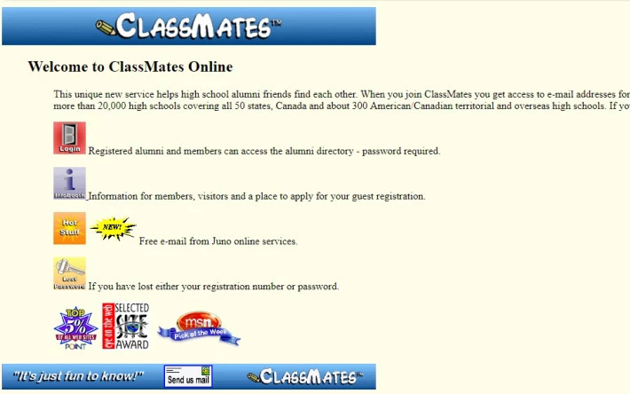
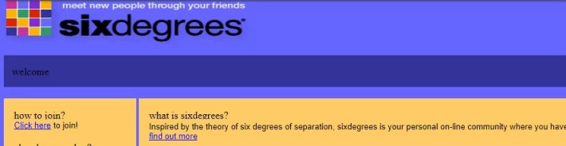
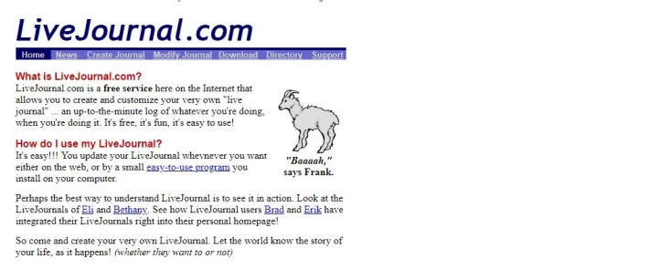
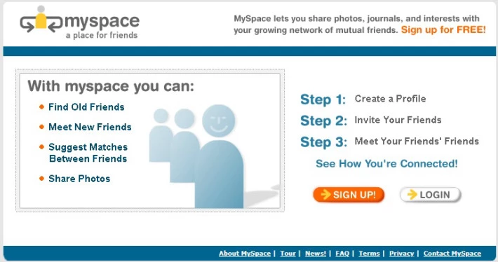
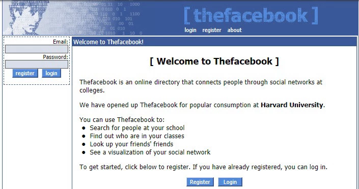
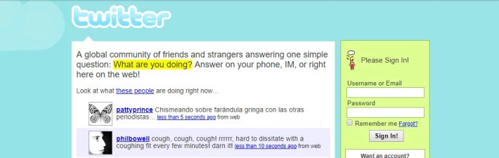
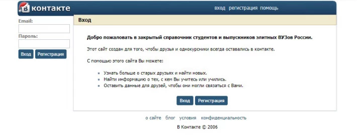
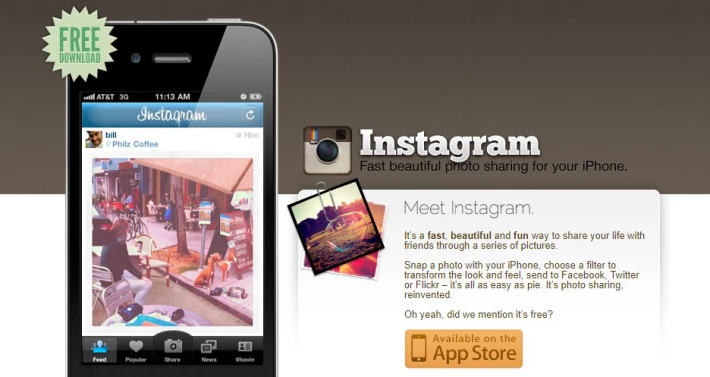

Уже около двадцати лет социальные сети развиваются в ускоренном темпе. Если первое время это были платформы для общения на расстоянии, то сегодня – полноценные площадки с огромным функционалом. Социальные сети значительно упростили жизнь, дали толчок к появлению новых профессий. Именно здесь человек может найти друзей по интересам, решить рабочие и социальные вопросы и даже провести денежные операции.
Однако социальные сети не всегда были такими, какими мы их видим сегодня. Как же они появились, и для чего их планировали разработчики?
Существует огромное количество социальных сетей, но в нашем обзоре мы рассмотрим, те которые стояли у истоков.
Classmates
Первая в истории социальная сеть появилась в 1995 году. Это был веб-сайт "Classmates.com". Примечательно, но слово "Classmates" в переводе с английского означает "Одноклассники". По сути, на его основе появилась известная в своё время русская сеть "Одноклассники. ru".

Создал сайт американец Рэнди Конрадс. Этот сайт помогал зарегистрированным посетителям находить и поддерживать отношения с друзьями, одноклассниками, однокурсниками и другими знакомыми людьми. Первое время там невозможно было обмениваться сообщениями. Это была база данных учащихся заведений. С ростом популярности сайта появилась возможность размещать фото и отправлять текстовые сообщения. Сейчас в этой сети зарегистрировано более 40 миллионов людей, преимущественно из США и Канады.
Идея была подхвачена другими разработчиками, и постепенно мир стал узнавать о новых социальных сетях.
SixDegrees
В 1997 году была запущен сайт "SixDegrees".
Здесь уже можно было создавать личные профили, заполнять информацию о своих интересах, искать друзей. В 2001 году сеть закрылась. Разработчик Эндрю Вейнрейх объяснил это следующим образом:
В 2000 году меньше половины жителей США имеют доступ в интернет, сеть опережает своё время и пока не достаточно интересна пользователям

Livejournal.com
Тем не менее, в 1999 году появился сервис "Livejournal.com".

Помимо анкет здесь была возможность вести свой электронный дневник. Это был первый сервис с интернет-блогами.
MySpace
В 2003 году стартовала сеть "MySpace".

Это была площадка для самопрезентации. Многие музыканты стали активно продвигать там свою музыку.
Facebook
В 2004 году появился "Facebook".

Тщательно продуманная и на сегодня крупнейшая сеть. Кстати, главный создатель сети Марк Цукерберг благодаря запуску проекта стал самым молодым миллиардером. Причем сегодня сеть уже не так удобна и прогрессивна, пользователи проявляют в ней очень малую активность.
Twitter
В 2006 году Джеком Дорси был запущен "Twitter".

Здесь можно было обмениваться короткими заметками и мыслями. Сегодня твиттером пользуются даже президенты.
ВКонтакте
В том же 2006 году появился русский аналог Фейсбука "ВКонтакте".

Из-за того что он намного удобнее американского аналога, он стал социальной сетью – лидером на территории СНГ. Но пользуются им и зарубежные пользователи. На сайте можно найти не только друзей, но и литературу, подкасты, подборку музыки и страницы интересующих заведений.
Instagram
В 2010 году появилось мобильное приложение для обмена фотографиями "Instagram" (Создатель - компания Meta*).

Сегодня это не просто приложение, но также площадка для заработка, продвижения услуг, фото и видеоблогов.
Помимо этих социальных сетей открывались многие сайты. Разработчики всех стран пытались выпустить свои проекты, но мало кто смог сделать действительно достойный сервис.
Этапы развития социальных сетей
Развитие социальных сетей разделяют на три основных этапа:
Первый этап – период с 1995 по 2002 год. В это время основной задачей социальных сетей было обеспечение удаленного общения между людьми. Самые простые текстовые сообщения в это время были настоящим прорывом. Однако, чтобы найти нужного человека или новость, человек сам должен был пользоваться поиском. Никаких рекомендаций и индивидуальной "ленты" не предусматривалось. На первом этапе соц. сети не выполняли функцию "виртуального помощника".
Второй этап – период с 2002 по 2003 год. В этот период понемногу стал расширяться функционал. Пользователи получили возможность публиковать свои фотографии, обмениваться аудио и видео-файлами. К общению прибавился файловый обмен. Популярность социальных сетей подогревали регистрирующиеся там знаменитости. Поклонники получили возможность следить за их жизнью, помимо общения со знакомыми, людей стали интересовать интернет-знакомства.
Третий этап – период с 2004 и по наши дни. Настоящий золотой век для социальных сетей. Именно в это время появляются расширенные функции, видеозвонки, блоги, реклама.
Функционал популярных сетей постоянно проходит через улучшения. Появилась "умная лента", которая убирает с ленты пользователя все, что ему не интересно. Социальные медиа становятся умными помощниками, они советуют музыку, друзей, анализируют пользователя и подстраиваются под его интересы.
Будущее социальных сетей
Сегодня социальные сети переживают свой рассвет. Только за последние несколько лет их функционал существенно расширился. В 2019 году соц. сети это не просто сайт или приложение – это полноценная платформа для общения, бизнеса, продвижения своих талантов и решения важных вопросов.
Во многих регионах страны уже практикуется учет голосований в социальных сетях. Так, местные администрации подробно следят за тем, что пишут жители в группах социальных сетей. Многие государственные инстанции отвечают на жалобы жителей онлайн, а чиновники заводят аккаунты в социальных сетях, чтобы быть в диалоге с гражданами. Очевидно, что в будущем достучаться до власти будет намного проще, социальные сети существенно упростят жизнь.
С каждым годом интернет-пространство "зачищается" от ботов и фейков. Если прежде чем зарегистрировать профиль пользователь должен будет подтвердить свою личность, это сделает популярные онлайн-платформы полноценной социальной средой.
Большая часть нововведений пока еще так и остается на уровне предположений и догадок. Но ясно одно, в будущем социальные сети выйдут на новый уровень. Каждому, кто хочет оставаться в курсе последних событий, а также всем, кто хочет вывести бизнес на новый уровень нужно ориентироваться на пространство социальных медиа.